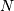
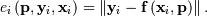
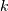
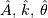
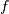

Table Of Contents
- Optimization (scipy.optimize)
Previous topic
Next topic
Optimization (scipy.optimize)¶
The scipy.optimize package provides several commonly used optimization algorithms. A detailed listing is available: scipy.optimize (can also be found by help(scipy.optimize)).
The module contains:
- Unconstrained and constrained minimization of multivariate scalar functions (minimize) using a variety of algorithms (e.g. BFGS, Nelder-Mead simplex, Newton Conjugate Gradient, COBYLA or SLSQP)
- Global (brute-force) optimization routines (e.g., anneal, basinhopping)
- Least-squares minimization (leastsq) and curve fitting (curve_fit) algorithms
- Scalar univariate functions minimizers (minimize_scalar) and root finders (newton)
- Multivariate equation system solvers (root) using a variety of algorithms (e.g. hybrid Powell, Levenberg-Marquardt or large-scale methods such as Newton-Krylov).
Below, several examples demonstrate their basic usage.
Unconstrained minimization of multivariate scalar functions (minimize)¶
The minimize function provides a common interface to unconstrained and constrained minimization algorithms for multivariate scalar functions in scipy.optimize. To demonstrate the minimization function consider the problem of minimizing the Rosenbrock function of  variables:
The minimum value of this function is 0 which is achieved when
Note that the Rosenbrock function and its derivatives are included in scipy.optimize. The implementations shown in the following sections provide examples of how to define an objective function as well as its jacobian and hessian functions.
Nelder-Mead Simplex algorithm (method='Nelder-Mead')¶
In the example below, the minimize routine is used with the Nelder-Mead simplex algorithm (selected through the method parameter):
>>> import numpy as np
>>> from scipy.optimize import minimize
>>> def rosen(x):
... """The Rosenbrock function"""
... return sum(100.0*(x[1:]-x[:-1]**2.0)**2.0 + (1-x[:-1])**2.0)
>>> x0 = np.array([1.3, 0.7, 0.8, 1.9, 1.2])
>>> res = minimize(rosen, x0, method='nelder-mead',
... options={'xtol': 1e-8, 'disp': True})
Optimization terminated successfully.
Current function value: 0.000000
Iterations: 339
Function evaluations: 571
>>> print(res.x)
[ 1. 1. 1. 1. 1.]
The simplex algorithm is probably the simplest way to minimize a fairly well-behaved function. It requires only function evaluations and is a good choice for simple minimization problems. However, because it does not use any gradient evaluations, it may take longer to find the minimum.
Another optimization algorithm that needs only function calls to find the minimum is Powell‘s method available by setting method='powell' in minimize.
Broyden-Fletcher-Goldfarb-Shanno algorithm (method='BFGS')¶
In order to converge more quickly to the solution, this routine uses the gradient of the objective function. If the gradient is not given by the user, then it is estimated using first-differences. The Broyden-Fletcher-Goldfarb-Shanno (BFGS) method typically requires fewer function calls than the simplex algorithm even when the gradient must be estimated.
To demonstrate this algorithm, the Rosenbrock function is again used. The gradient of the Rosenbrock function is the vector:
This expression is valid for the interior derivatives. Special cases are
A Python function which computes this gradient is constructed by the code-segment:
>>> def rosen_der(x):
... xm = x[1:-1]
... xm_m1 = x[:-2]
... xm_p1 = x[2:]
... der = np.zeros_like(x)
... der[1:-1] = 200*(xm-xm_m1**2) - 400*(xm_p1 - xm**2)*xm - 2*(1-xm)
... der[0] = -400*x[0]*(x[1]-x[0]**2) - 2*(1-x[0])
... der[-1] = 200*(x[-1]-x[-2]**2)
... return der
This gradient information is specified in the minimize function through the jac parameter as illustrated below.
>>> res = minimize(rosen, x0, method='BFGS', jac=rosen_der,
... options={'disp': True})
Optimization terminated successfully.
Current function value: 0.000000
Iterations: 51
Function evaluations: 63
Gradient evaluations: 63
>>> print(res.x)
[ 1. 1. 1. 1. 1.]
Newton-Conjugate-Gradient algorithm (method='Newton-CG')¶
The method which requires the fewest function calls and is therefore often the fastest method to minimize functions of many variables uses the Newton-Conjugate Gradient algorithm. This method is a modified Newton’s method and uses a conjugate gradient algorithm to (approximately) invert the local Hessian. Newton’s method is based on fitting the function locally to a quadratic form:
where is a matrix of second-derivatives (the Hessian). If the Hessian is positive definite then the local minimum of this function can be found by setting the gradient of the quadratic form to zero, resulting in
The inverse of the Hessian is evaluated using the conjugate-gradient method. An example of employing this method to minimizing the Rosenbrock function is given below. To take full advantage of the Newton-CG method, a function which computes the Hessian must be provided. The Hessian matrix itself does not need to be constructed, only a vector which is the product of the Hessian with an arbitrary vector needs to be available to the minimization routine. As a result, the user can provide either a function to compute the Hessian matrix, or a function to compute the product of the Hessian with an arbitrary vector.
Full Hessian example:¶
The Hessian of the Rosenbrock function is

if with defining the matrix. Other non-zero entries of the matrix are
For example, the Hessian when is
The code which computes this Hessian along with the code to minimize the function using Newton-CG method is shown in the following example:
>>> def rosen_hess(x):
... x = np.asarray(x)
... H = np.diag(-400*x[:-1],1) - np.diag(400*x[:-1],-1)
... diagonal = np.zeros_like(x)
... diagonal[0] = 1200*x[0]**2-400*x[1]+2
... diagonal[-1] = 200
... diagonal[1:-1] = 202 + 1200*x[1:-1]**2 - 400*x[2:]
... H = H + np.diag(diagonal)
... return H
>>> res = minimize(rosen, x0, method='Newton-CG',
... jac=rosen_der, hess=rosen_hess,
... options={'avextol': 1e-8, 'disp': True})
Optimization terminated successfully.
Current function value: 0.000000
Iterations: 19
Function evaluations: 22
Gradient evaluations: 19
Hessian evaluations: 19
>>> print(res.x)
[ 1. 1. 1. 1. 1.]
Hessian product example:¶
For larger minimization problems, storing the entire Hessian matrix can consume considerable time and memory. The Newton-CG algorithm only needs the product of the Hessian times an arbitrary vector. As a result, the user can supply code to compute this product rather than the full Hessian by giving a hess function which take the minimization vector as the first argument and the arbitrary vector as the second argument (along with extra arguments passed to the function to be minimized). If possible, using Newton-CG with the Hessian product option is probably the fastest way to minimize the function.
In this case, the product of the Rosenbrock Hessian with an arbitrary vector is not difficult to compute. If is the arbitrary vector, then has elements:
Code which makes use of this Hessian product to minimize the Rosenbrock function using minimize follows:
>>> def rosen_hess_p(x,p):
... x = np.asarray(x)
... Hp = np.zeros_like(x)
... Hp[0] = (1200*x[0]**2 - 400*x[1] + 2)*p[0] - 400*x[0]*p[1]
... Hp[1:-1] = -400*x[:-2]*p[:-2]+(202+1200*x[1:-1]**2-400*x[2:])*p[1:-1] \
... -400*x[1:-1]*p[2:]
... Hp[-1] = -400*x[-2]*p[-2] + 200*p[-1]
... return Hp
>>> res = minimize(rosen, x0, method='Newton-CG',
... jac=rosen_der, hess=rosen_hess_p,
... options={'avextol': 1e-8, 'disp': True})
Optimization terminated successfully.
Current function value: 0.000000
Iterations: 20
Function evaluations: 23
Gradient evaluations: 20
Hessian evaluations: 44
>>> print(res.x)
[ 1. 1. 1. 1. 1.]
Constrained minimization of multivariate scalar functions (minimize)¶
The minimize function also provides an interface to several constrained minimization algorithm. As an example, the Sequential Least SQuares Programming optimization algorithm (SLSQP) will be considered here. This algorithm allows to deal with constrained minimization problems of the form:
As an example, let us consider the problem of maximizing the function:
subject to an equality and an inequality constraints defined as:
The objective function and its derivative are defined as follows.
>>> def func(x, sign=1.0):
... """ Objective function """
... return sign*(2*x[0]*x[1] + 2*x[0] - x[0]**2 - 2*x[1]**2)
>>> def func_deriv(x, sign=1.0):
... """ Derivative of objective function """
... dfdx0 = sign*(-2*x[0] + 2*x[1] + 2)
... dfdx1 = sign*(2*x[0] - 4*x[1])
... return np.array([ dfdx0, dfdx1 ])
Note that since minimize only minimizes functions, the sign parameter is introduced to multiply the objective function (and its derivative by -1) in order to perform a maximization.
Then constraints are defined as a sequence of dictionaries, with keys type, fun and jac.
>>> cons = ({'type': 'eq',
... 'fun' : lambda x: np.array([x[0]**3 - x[1]]),
... 'jac' : lambda x: np.array([3.0*(x[0]**2.0), -1.0])},
... {'type': 'ineq',
... 'fun' : lambda x: np.array([x[1] - 1]),
... 'jac' : lambda x: np.array([0.0, 1.0])})
Now an unconstrained optimization can be performed as:
>>> res = minimize(func, [-1.0,1.0], args=(-1.0,), jac=func_deriv,
... method='SLSQP', options={'disp': True})
Optimization terminated successfully. (Exit mode 0)
Current function value: -2.0
Iterations: 4
Function evaluations: 5
Gradient evaluations: 4
>>> print(res.x)
[ 2. 1.]
and a constrained optimization as:
>>> res = minimize(func, [-1.0,1.0], args=(-1.0,), jac=func_deriv,
... constraints=cons, method='SLSQP', options={'disp': True})
Optimization terminated successfully. (Exit mode 0)
Current function value: -1.00000018311
Iterations: 9
Function evaluations: 14
Gradient evaluations: 9
>>> print(res.x)
[ 1.00000009 1. ]
Least-square fitting (leastsq)¶
All of the previously-explained minimization procedures can be used to solve a least-squares problem provided the appropriate objective function is constructed. For example, suppose it is desired to fit a set of data to a known model, where is a vector of parameters for the model that need to be found. A common method for determining which parameter vector gives the best fit to the data is to minimize the sum of squares of the residuals. The residual is usually defined for each observed data-point as

An objective function to pass to any of the previous minization algorithms to obtain a least-squares fit is.
The leastsq algorithm performs this squaring and summing of the residuals automatically. It takes as an input argument the vector function and returns the value of which minimizes directly. The user is also encouraged to provide the Jacobian matrix of the function (with derivatives down the columns or across the rows). If the Jacobian is not provided, it is estimated.
An example should clarify the usage. Suppose it is believed some measured data follow a sinusoidal pattern
where the parameters  , and  are unknown. The residual vector is
are unknown. The residual vector is
By defining a function to compute the residuals and (selecting an appropriate starting position), the least-squares fit routine can be used to find the best-fit parameters . This is shown in the following example:
>>> from numpy import *
>>> x = arange(0,6e-2,6e-2/30)
>>> A,k,theta = 10, 1.0/3e-2, pi/6
>>> y_true = A*sin(2*pi*k*x+theta)
>>> y_meas = y_true + 2*random.randn(len(x))
>>> def residuals(p, y, x):
... A,k,theta = p
... err = y-A*sin(2*pi*k*x+theta)
... return err
>>> def peval(x, p):
... return p[0]*sin(2*pi*p[1]*x+p[2])
>>> p0 = [8, 1/2.3e-2, pi/3]
>>> print(array(p0))
[ 8. 43.4783 1.0472]
>>> from scipy.optimize import leastsq
>>> plsq = leastsq(residuals, p0, args=(y_meas, x))
>>> print(plsq[0])
[ 10.9437 33.3605 0.5834]
>>> print(array([A, k, theta]))
[ 10. 33.3333 0.5236]
>>> import matplotlib.pyplot as plt
>>> plt.plot(x,peval(x,plsq[0]),x,y_meas,'o',x,y_true)
>>> plt.title('Least-squares fit to noisy data')
>>> plt.legend(['Fit', 'Noisy', 'True'])
>>> plt.show()
Univariate function minimizers (minimize_scalar)¶
Often only the minimum of an univariate function (i.e. a function that takes a scalar as input) is needed. In these circumstances, other optimization techniques have been developed that can work faster. These are accessible from the minimize_scalar function which proposes several algorithms.
Unconstrained minimization (method='brent')¶
There are actually two methods that can be used to minimize an univariate function: brent and golden, but golden is included only for academic purposes and should rarely be used. These can be respectively selected through the method parameter in minimize_scalar. The brent method uses Brent’s algorithm for locating a minimum. Optimally a bracket (the bs parameter) should be given which contains the minimum desired. A bracket is a triple such that and . If this is not given, then alternatively two starting points can be chosen and a bracket will be found from these points using a simple marching algorithm. If these two starting points are not provided 0 and 1 will be used (this may not be the right choice for your function and result in an unexpected minimum being returned).
Here is an example:
>>> from scipy.optimize import minimize_scalar
>>> f = lambda x: (x - 2) * (x + 1)**2
>>> res = minimize_scalar(f, method='brent')
>>> print(res.x)
1.0
Bounded minimization (method='bounded')¶
Very often, there are constraints that can be placed on the solution space before minimization occurs. The bounded method in minimize_scalar is an example of a constrained minimization procedure that provides a rudimentary interval constraint for scalar functions. The interval constraint allows the minimization to occur only between two fixed endpoints, specified using the mandatory bs parameter.
For example, to find the minimum of near
 , minimize_scalar can be called using the interval
as a constraint. The result is
:
, minimize_scalar can be called using the interval
as a constraint. The result is
:
>>> from scipy.special import j1
>>> res = minimize_scalar(j1, bs=(4, 7), method='bounded')
>>> print(res.x)
5.33144184241
Root finding¶
Scalar functions¶
If one has a single-variable equation, there are four different root finding algorithms that can be tried. Each of these algorithms requires the endpoints of an interval in which a root is expected (because the function changes signs). In general brentq is the best choice, but the other methods may be useful in certain circumstances or for academic purposes.
Fixed-point solving¶
A problem closely related to finding the zeros of a function is the problem of finding a fixed-point of a function. A fixed point of a function is the point at which evaluation of the function returns the point: Clearly the fixed point of is the root of Equivalently, the root of  is the fixed_point of The routine fixed_point provides a simple iterative method using Aitkens sequence acceleration to estimate the fixed point of given a starting point.
Sets of equations¶
Finding a root of a set of non-linear equations can be achieve using the root function. Several methods are available, amongst which hybr (the default) and lm which respectively use the hybrid method of Powell and the Levenberg-Marquardt method from MINPACK.
The following example considers the single-variable transcendental equation
a root of which can be found as follows:
>>> import numpy as np
>>> from scipy.optimize import root
>>> def func(x):
... return x + 2 * np.cos(x)
>>> sol = root(func, 0.3)
>>> sol.x
array([-1.02986653])
>>> sol.fun
array([ -6.66133815e-16])
Consider now a set of non-linear equations
We define the objective function so that it also returns the Jacobian and indicate this by setting the jac parameter to True. Also, the Levenberg-Marquardt solver is used here.
>>> def func2(x):
... f = [x[0] * np.cos(x[1]) - 4,
... x[1]*x[0] - x[1] - 5]
... df = np.array([[np.cos(x[1]), -x[0] * np.sin(x[1])],
... [x[1], x[0] - 1]])
... return f, df
>>> sol = root(func2, [1, 1], jac=True, method='lm')
>>> sol.x
array([ 6.50409711, 0.90841421])
Root finding for large problems¶
Methods hybr and lm in root cannot deal with a very large number of variables (N), as they need to calculate and invert a dense N x N Jacobian matrix on every Newton step. This becomes rather inefficient when N grows.
Consider for instance the following problem: we need to solve the following integrodifferential equation on the square :
with the boundary condition on the upper edge and elsewhere on the boundary of the square. This can be done by approximating the continuous function P by its values on a grid, , with a small grid spacing h. The derivatives and integrals can then be approximated; for instance . The problem is then equivalent to finding the root of some function residual(P), where P is a vector of length .
Now, because can be large, methods hybr or lm in root will take a long time to solve this problem. The solution can however be found using one of the large-scale solvers, for example krylov, broyden2, or anderson. These use what is known as the inexact Newton method, which instead of computing the Jacobian matrix exactly, forms an approximation for it.
The problem we have can now be solved as follows:
import numpy as np
from scipy.optimize import root
from numpy import cosh, zeros_like, mgrid, zeros
# parameters
nx, ny = 75, 75
hx, hy = 1./(nx-1), 1./(ny-1)
P_left, P_right = 0, 0
P_top, P_bottom = 1, 0
def residual(P):
d2x = zeros_like(P)
d2y = zeros_like(P)
d2x[1:-1] = (P[2:] - 2*P[1:-1] + P[:-2]) / hx/hx
d2x[0] = (P[1] - 2*P[0] + P_left)/hx/hx
d2x[-1] = (P_right - 2*P[-1] + P[-2])/hx/hx
d2y[:,1:-1] = (P[:,2:] - 2*P[:,1:-1] + P[:,:-2])/hy/hy
d2y[:,0] = (P[:,1] - 2*P[:,0] + P_bottom)/hy/hy
d2y[:,-1] = (P_top - 2*P[:,-1] + P[:,-2])/hy/hy
return d2x + d2y + 5*cosh(P).mean()**2
# solve
guess = zeros((nx, ny), float)
sol = root(residual, guess, method='krylov', options={'disp': True})
#sol = root(residual, guess, method='broyden2', options={'disp': True, 'max_rank': 50})
#sol = root(residual, guess, method='anderson', options={'disp': True, 'M': 10})
print('Residual: %g' % abs(residual(sol.x)).max())
# visualize
import matplotlib.pyplot as plt
x, y = mgrid[0:1:(nx*1j), 0:1:(ny*1j)]
plt.pcolor(x, y, sol.x)
plt.colorbar()
plt.show()
Still too slow? Preconditioning.¶
When looking for the zero of the functions , i = 1, 2, ..., N, the krylov solver spends most of its time inverting the Jacobian matrix,
If you have an approximation for the inverse matrix , you can use it for preconditioning the linear inversion problem. The idea is that instead of solving one solves : since matrix is “closer” to the identity matrix than is, the equation should be easier for the Krylov method to deal with.
The matrix M can be passed to root with method krylov as an option options['jac_options']['inner_M']. It can be a (sparse) matrix or a scipy.sparse.linalg.LinearOperator instance.
For the problem in the previous section, we note that the function to solve consists of two parts: the first one is application of the Laplace operator, , and the second is the integral. We can actually easily compute the Jacobian corresponding to the Laplace operator part: we know that in one dimension

so that the whole 2-D operator is represented by
The matrix of the Jacobian corresponding to the integral is more difficult to calculate, and since all of it entries are nonzero, it will be difficult to invert. on the other hand is a relatively simple matrix, and can be inverted by scipy.sparse.linalg.splu (or the inverse can be approximated by scipy.sparse.linalg.spilu). So we are content to take and hope for the best.
In the example below, we use the preconditioner .
import numpy as np
from scipy.optimize import root
from scipy.sparse import spdiags, kron
from scipy.sparse.linalg import spilu, LinearOperator
from numpy import cosh, zeros_like, mgrid, zeros, eye
# parameters
nx, ny = 75, 75
hx, hy = 1./(nx-1), 1./(ny-1)
P_left, P_right = 0, 0
P_top, P_bottom = 1, 0
def get_preconditioner():
"""Compute the preconditioner M"""
diags_x = zeros((3, nx))
diags_x[0,:] = 1/hx/hx
diags_x[1,:] = -2/hx/hx
diags_x[2,:] = 1/hx/hx
Lx = spdiags(diags_x, [-1,0,1], nx, nx)
diags_y = zeros((3, ny))
diags_y[0,:] = 1/hy/hy
diags_y[1,:] = -2/hy/hy
diags_y[2,:] = 1/hy/hy
Ly = spdiags(diags_y, [-1,0,1], ny, ny)
J1 = kron(Lx, eye(ny)) + kron(eye(nx), Ly)
# Now we have the matrix `J_1`. We need to find its inverse `M` --
# however, since an approximate inverse is enough, we can use
# the *incomplete LU* decomposition
J1_ilu = spilu(J1)
# This returns an object with a method .solve() that evaluates
# the corresponding matrix-vector product. We need to wrap it into
# a LinearOperator before it can be passed to the Krylov methods:
M = LinearOperator(shape=(nx*ny, nx*ny), matvec=J1_ilu.solve)
return M
def solve(preconditioning=True):
"""Compute the solution"""
count = [0]
def residual(P):
count[0] += 1
d2x = zeros_like(P)
d2y = zeros_like(P)
d2x[1:-1] = (P[2:] - 2*P[1:-1] + P[:-2])/hx/hx
d2x[0] = (P[1] - 2*P[0] + P_left)/hx/hx
d2x[-1] = (P_right - 2*P[-1] + P[-2])/hx/hx
d2y[:,1:-1] = (P[:,2:] - 2*P[:,1:-1] + P[:,:-2])/hy/hy
d2y[:,0] = (P[:,1] - 2*P[:,0] + P_bottom)/hy/hy
d2y[:,-1] = (P_top - 2*P[:,-1] + P[:,-2])/hy/hy
return d2x + d2y + 5*cosh(P).mean()**2
# preconditioner
if preconditioning:
M = get_preconditioner()
else:
M = None
# solve
guess = zeros((nx, ny), float)
sol = root(residual, guess, method='krylov',
options={'disp': True,
'jac_options': {'inner_M': M}})
print 'Residual', abs(residual(sol.x)).max()
print 'Evaluations', count[0]
return sol.x
def main():
sol = solve(preconditioning=True)
# visualize
import matplotlib.pyplot as plt
x, y = mgrid[0:1:(nx*1j), 0:1:(ny*1j)]
plt.clf()
plt.pcolor(x, y, sol)
plt.clim(0, 1)
plt.colorbar()
plt.show()
if __name__ == "__main__":
main()
Resulting run, first without preconditioning:
0: |F(x)| = 803.614; step 1; tol 0.000257947
1: |F(x)| = 345.912; step 1; tol 0.166755
2: |F(x)| = 139.159; step 1; tol 0.145657
3: |F(x)| = 27.3682; step 1; tol 0.0348109
4: |F(x)| = 1.03303; step 1; tol 0.00128227
5: |F(x)| = 0.0406634; step 1; tol 0.00139451
6: |F(x)| = 0.00344341; step 1; tol 0.00645373
7: |F(x)| = 0.000153671; step 1; tol 0.00179246
8: |F(x)| = 6.7424e-06; step 1; tol 0.00173256
Residual 3.57078908664e-07
Evaluations 317
and then with preconditioning:
0: |F(x)| = 136.993; step 1; tol 7.49599e-06
1: |F(x)| = 4.80983; step 1; tol 0.00110945
2: |F(x)| = 0.195942; step 1; tol 0.00149362
3: |F(x)| = 0.000563597; step 1; tol 7.44604e-06
4: |F(x)| = 1.00698e-09; step 1; tol 2.87308e-12
Residual 9.29603061195e-11
Evaluations 77
Using a preconditioner reduced the number of evaluations of the residual function by a factor of 4. For problems where the residual is expensive to compute, good preconditioning can be crucial — it can even decide whether the problem is solvable in practice or not.
Preconditioning is an art, science, and industry. Here, we were lucky in making a simple choice that worked reasonably well, but there is a lot more depth to this topic than is shown here.
References
Some further reading and related software:
| [KK] | D.A. Knoll and D.E. Keyes, “Jacobian-free Newton-Krylov methods”, J. Comp. Phys. 193, 357 (2003). |
| [PP] | PETSc http://www.mcs.anl.gov/petsc/ and its Python bindings http://code.google.com/p/petsc4py/ |
| [AMG] | PyAMG (algebraic multigrid preconditioners/solvers) http://code.google.com/p/pyamg/ |